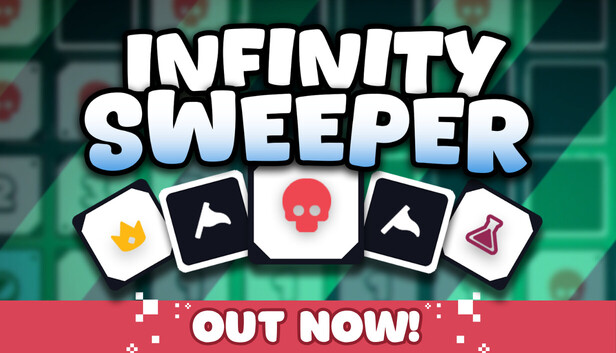

先找锚点
不要急着连点。先找边角、空白扩张点和能形成约束的数字边界，让第一轮信息尽快成网。

原攻略的章节已经完整，但对实战玩家来说还缺一个「进游戏前就能照着做」的中控页。本页把全站内容压缩成目标路线、商店判定、Boss 前检查和翻车复盘四个动作。
30 秒路线选择器
不同目标不该读同一套优先级。点选当前痛点，下面会切换成对应的路线卡。
不要急着连点。先找边角、空白扩张点和能形成约束的数字边界，让第一轮信息尽快成网。
把大盘切成 2–3 个边界区，每次只处理一个约束集合。标记是外置记忆，不是可有可无的手感动作。
能降低后续所有局失误成本的永久升级，通常高于一次性爽点；除非下一层会立刻进入高压 Boss。
Boss 前一层开始保留至少一张解歧义牌；把生命、卡牌、可揭示格当作同一套保险池。
| 问题 | 高分答案 | 策略含义 |
|---|---|---|
| 它是否跨局生效？ | 是 | 优先级 +2，永久线通常是最稳复利。 |
| 它是否减少误点 / 超时 / 死局？ | 是 | 优先级 +2，能把新手波动压下来。 |
| 它是否放大当前流派？ | 是，但依赖盘面 | 优先级 +1，适合中盘成型后加码。 |
| 它只是一次性收益？ | 是 | 默认 +0，只在 Boss 前或当前死局插队。 |
死因分类：误点 / 50-50 赌输 / Boss 超时 / 陷阱读错 / 商店投资断档。
下一局只改一件事：例如「Boss 前不再交最后一张揭示牌」或「新陷阱出现后先慢 10 秒读规则」。
不要写：我太菜了。要写：哪一个动作在制造重复损失。
失败复盘评分器
勾选这局最符合的翻车原因，系统会给出下一局优先改的动作。每次只改一个习惯，提升最快。
勾选原因后，这里会生成建议。